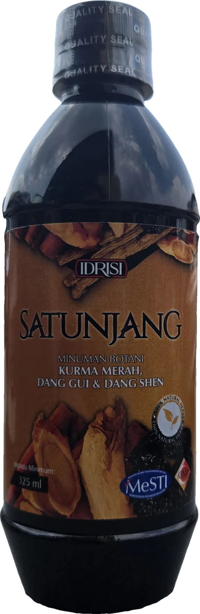
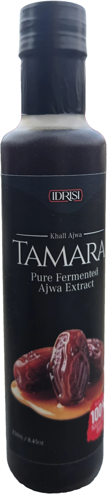
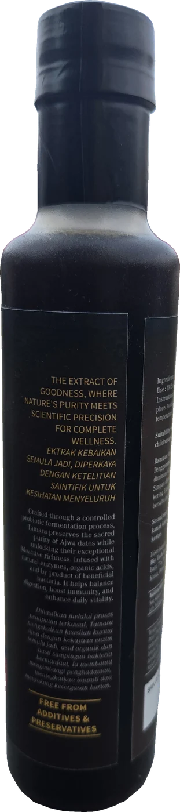
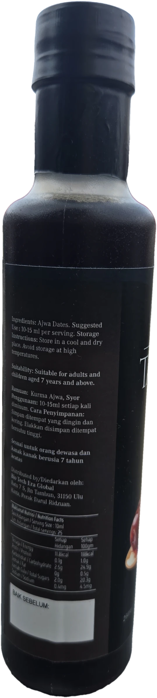
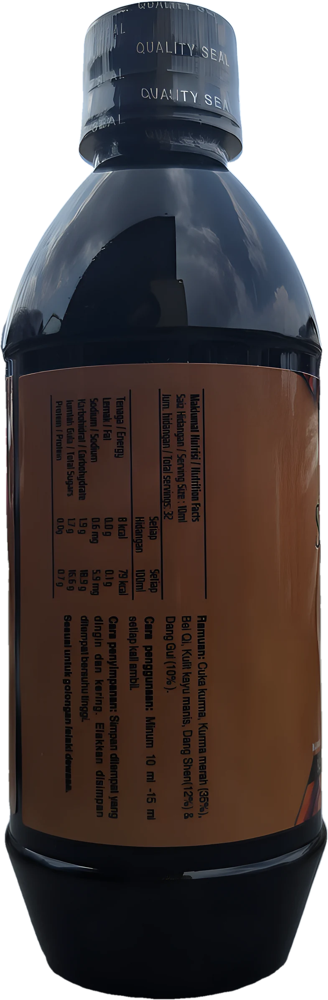
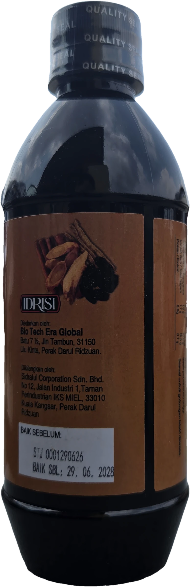

Khall Ajwa · 250ml
TAMARA
Pure Fermented Ajwa Extract
Ekstrak kurma Ajwa yang ditapai melalui proses penapaian probiotik terkawal. Dibuat daripada 100% kurma Ajwa asli.
- 100% Kurma Ajwa
- Tanpa bahan tambahan
- Tanpa pengawet
Bio Tech Era Global · Perak
Dua minuman kesihatan IDRISI — diperbuat daripada kurma dan herba semula jadi.




Khall Ajwa · 250ml
Pure Fermented Ajwa Extract
Ekstrak kurma Ajwa yang ditapai melalui proses penapaian probiotik terkawal. Dibuat daripada 100% kurma Ajwa asli.
Proses
Mengekalkan keaslian kurma Ajwa sambil membuka kekayaan bioaktifnya — enzim semula jadi, asid organik dan hasil sampingan bakteria bermanfaat.
Ramuan & penggunaan
Nutrisi setiap hidangan (10ml)
“Ekstrak kebaikan semula jadi, diperkaya dengan ketelitian saintifik untuk kesihatan menyeluruh.”


Minuman Botani · 325ml
Kurma Merah, Dang Gui & Dang Shen
Gabungan cuka kurma dan herba tradisional pilihan dalam satu botol. Berdaftar MeSTI dan dihasilkan di kilang GMP.
Ramuan
Bersama cuka kurma, Bei Qi & kulit kayu manis.
Penggunaan
Nutrisi setiap hidangan (10ml)
Ekstrak Ajwa terfermentasi
Minuman botani herba
Hubungi kami untuk tempahan & harga ejen.
Diedarkan oleh: Bio Tech Era Global, Batu 7½, Jln Tambun, 31150 Ulu Kinta, Perak Darul Ridzuan.
Dikilangkan oleh: Sidratul Corporation Sdn. Bhd., Kuala Kangsar, Perak.